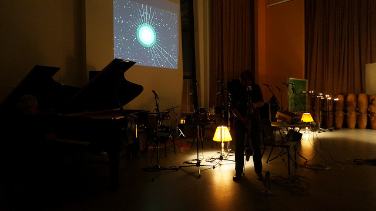
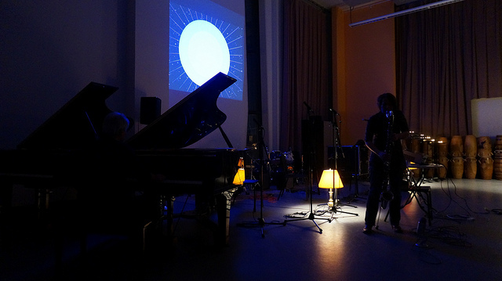

This audio visualizer was created to be performed in tandem with York University's musical improv group for an improv soirée hosted in November 2014. The visualizer was programmed in processing, and reacts to audio input from an external microphone. The colours and various other aesthetic properties are controlled wirelessly through TouchOSC from an iPhone.
 